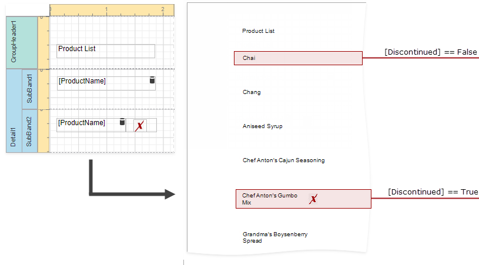
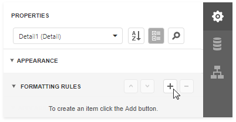
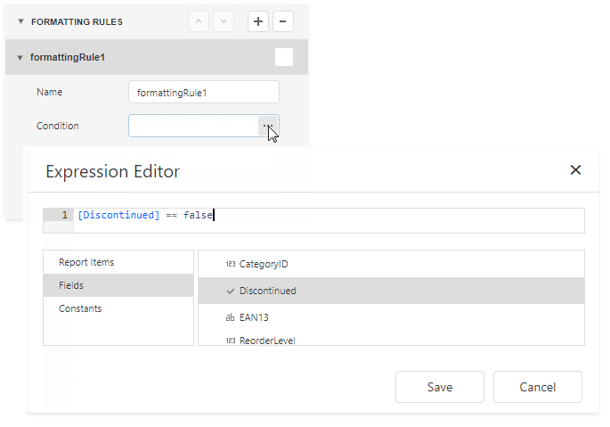
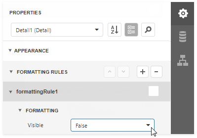
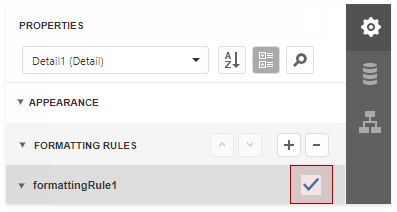

Conditionally Change a Band's Visibility
This topic describes how to change report band visibility.
Create a formatting rule for a band's Visible property to conditionally change the band's visibility based on a field's value or a parameter.
The report created in this tutorial contains two Detail sub-bands with different report controls. These sub-bands are used to display discontinued and current products.

The steps below demonstrate how to change a band's visibility based on a field's value.
Create formatting rule(s).
Select the report and switch to the Appearance category in the Properties panel. Select the Formatting rules node and click the plus button to add a new formatting rule.

In the tutorial's report, two rules are added.
Specify a condition for each rule. Click a rule's Condition property's ellipsis button. In the invoked Expression Editor, specify the required expression.

Here, the [Discontinued] == false expression is set for the formattingRule1 and the [Discontinued] == true expression - for the formattingRule2.
Specify the Visible property for the rules.

Here, the Visible property is set to False for both rules.
Apply the rule(s) to the required band(s).
Select a band and check a rule.

Here, each sub-band has a rule.
The Preview below displays how changes to band visibility influence the Product List. The SubBand1 is used to display products that have the Discontinued field set to false, and the SubBand2 is used to display discontinued products.